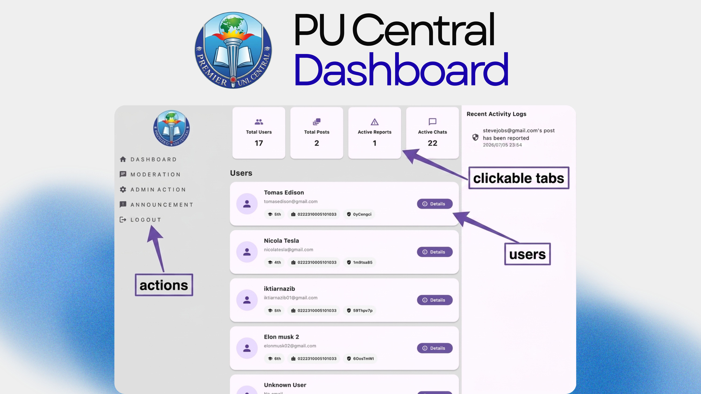
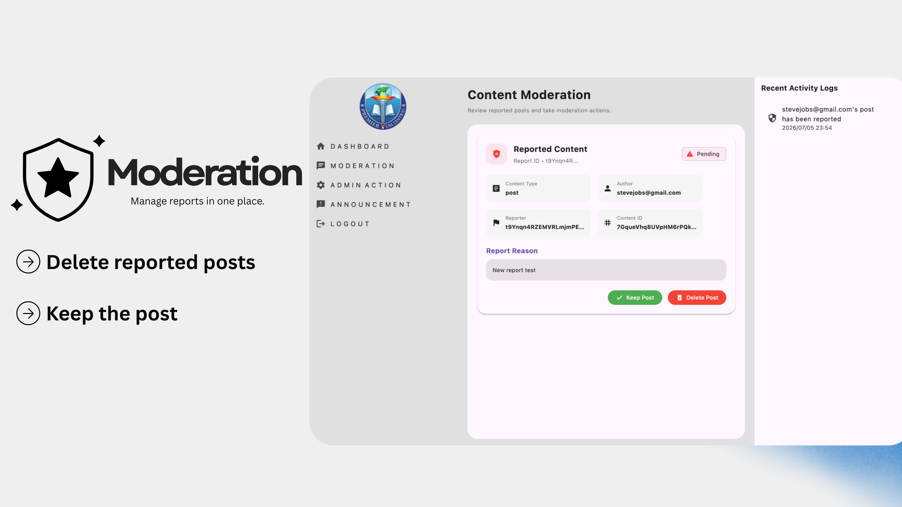
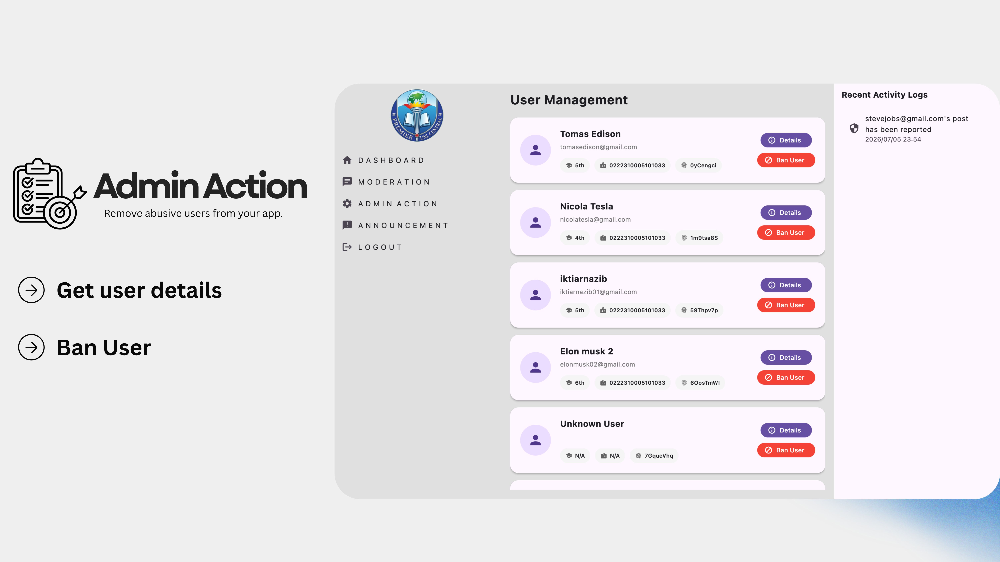
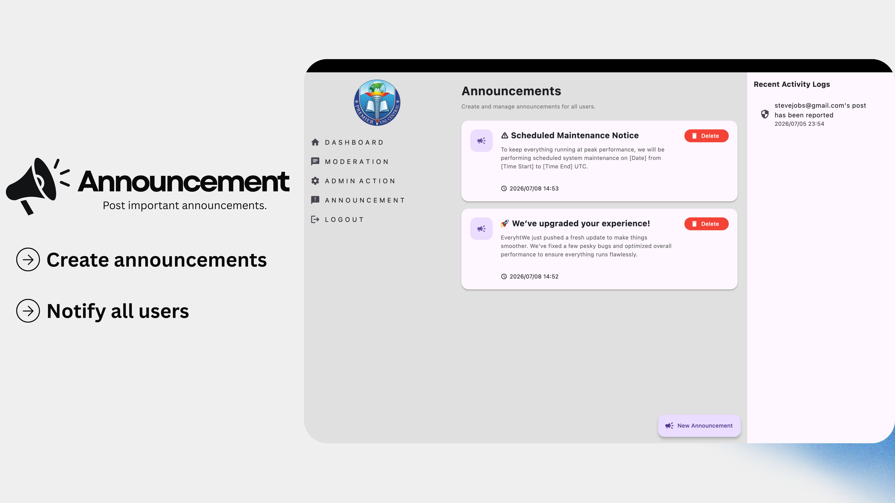
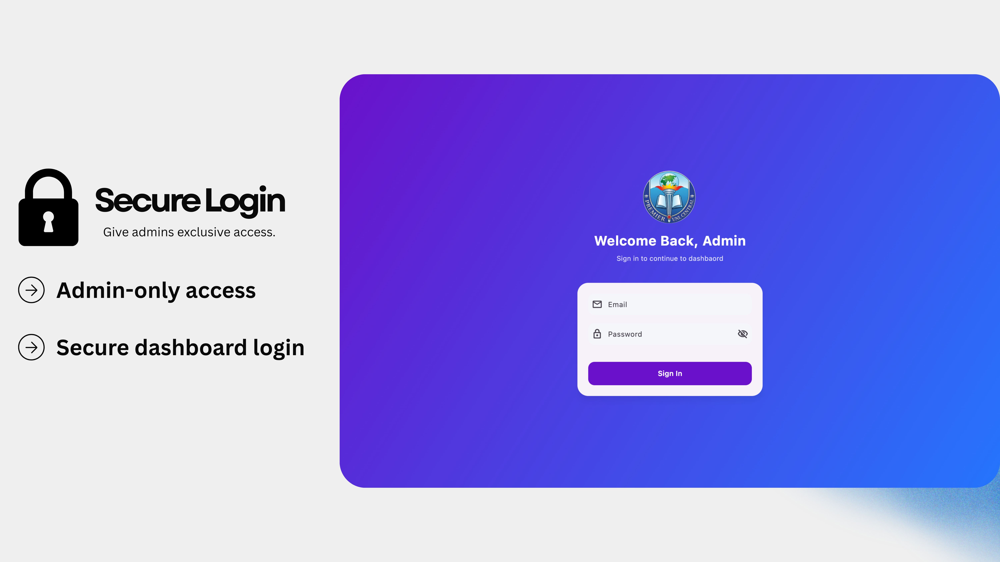
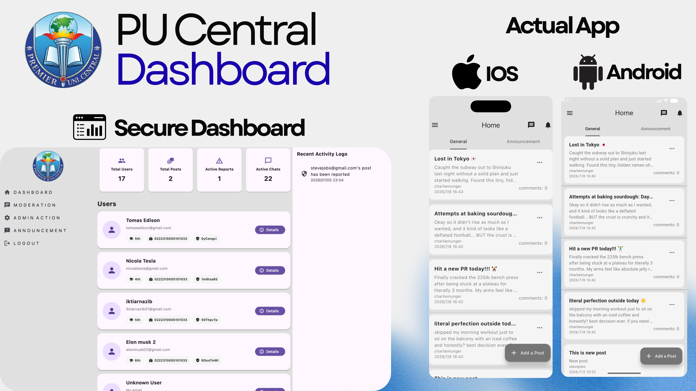
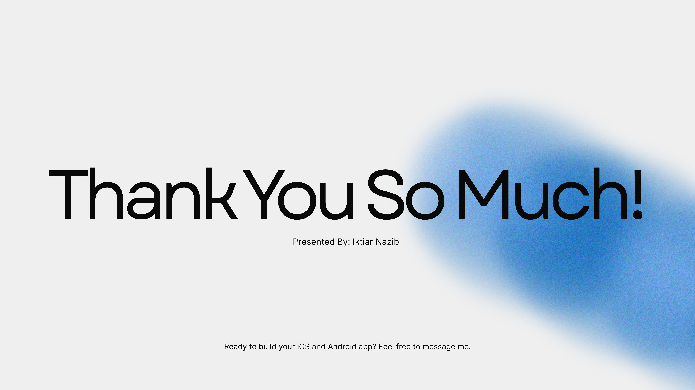

puSocial Admin Dashboard
This project was created to provide total control over the main puSocial social media app. It serves as a secure, centralized hub requiring admin login. Once authenticated, administrators can oversee everything happening in the mobile app: from monitoring live user messages, commenting, and posting activities, to handling user reports and actively blocking or banning malicious accounts. It also allows admins to instantly push out official global announcements and manage website page links.
User Management
Moderation
Announcements
Live Sync
Access the live dashboard of Premier Uni Central app here:
Launch Live Dashboard






© 2026 Iktiar